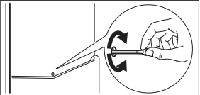

Инсталиране
Разполагане
Монтирайте този уред в сухо, добре проветриво помещение, където температурата в помещението отговаря на климатичния клас, посочен на табелката с данни на уреда:
| Климатичен клас | Околна температура |
| SN | +10C до +32C |
| N | +16C до +32C |
| ST | +16C до +38C |
| T | +16C до +43C |
Свързване към електрическата мрежа
- Преди включване към електрозахранващата мрежа проверете дали напрежението и честотата на табелката с данни отговарят на тези от домашната ви електрозахранваща мрежа.
- Уредът трябва да е заземен. За целта щепселът на захранващия кабел има специален контакт. Ако домашният контакт на електрозахранването не е заземен, свържете уреда към отделен заземяващ кабел в съответствие с действащите нормативни разпоредби след консултация с квалифициран техник.
- Производителят не носи отговорност, ако горепосочените мерки за безопасност не са спазени.
- Уредът съответства на Директивите на E.E.C.
Промяна на посоката на отваряне на вратата
В случай, че желаете да промените посоката на отваряне на вратата, свържете се с най-близкия оторизиран сервизен център. Специалистът от оторизираният сервизен център ще извърши обръщането на вратата за Ваша сметка.
Грижа и почистване
Почистване на вътрешността
Преди да използвате уреда за първи път, трябва да почистите вътрешността и всички вътрешни принадлежности с хладка сапунена вода и малко неутрален сапун, за да отстраните типичната за новите изделия миризма, а след това подсушете напълно.
Периодично почистване
Уредът трябва да се почиства редовно:
- Почиствайте вътрешността и принадлежностите с хладка вода и малко неутрален сапун.
- Редовно проверявайте уплътненията на вратата и ги забърсвайте, за да сте сигурни, че са чисти и без замърсявания.
- Изплакнете и подсушете напълно.
- Ако имате достъп, изчистете кондензатора и компресора в задната част на уреда с четка. Тази операция ще подобри работата на уреда и ще реализира икономия на енергия.
Размразяване
Вашият уред е без заскрежаване. Това означава, че не се образува скреж, когато той работи, нито по вътрешните стени, нито по хранителните продукти. Липсата на скреж се дължи на непрекъсната циркулация на студен въздух вътре в отделението, предизвикана от вентилатор с автоматично управление. Водата от размразяването се оттича по улей и се събира в специален контейнер, разположен в задната част на уреда, над електромотора на компресора, откъдето се изпарява. Важно е периодично да почиствате отвора за оттичане на размразената вода в средата на канала на хладилното отделение, за да предотвратите преливане на водата и отцеждането й върху храната вътре.

Периоди на бездействие
Когато уредът не се използва за дълъг период от време, вземете следните предпазни мерки:
- Изключете уреда от електрозахранването.
- Извадете всичката храна.
- Почистете уреда и всички принадлежности.
- Оставете вратата/вратите отворена/ени, за да предотвратите появата на неприятни миризми.